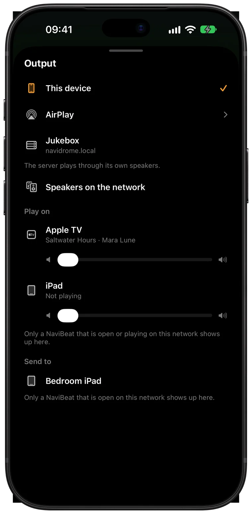
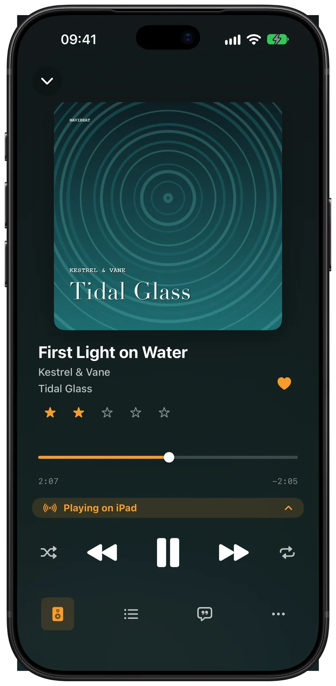
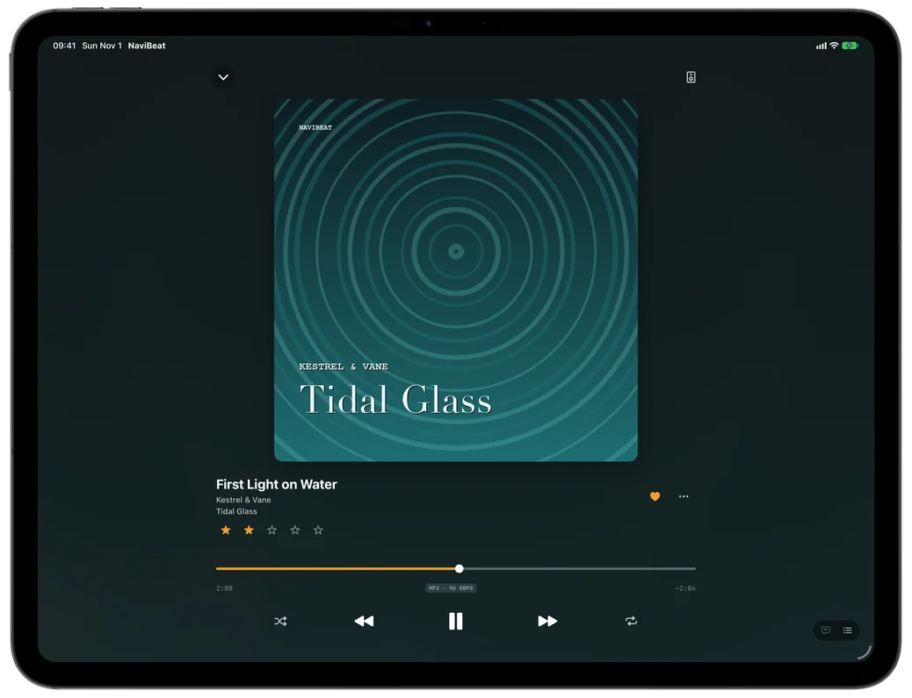
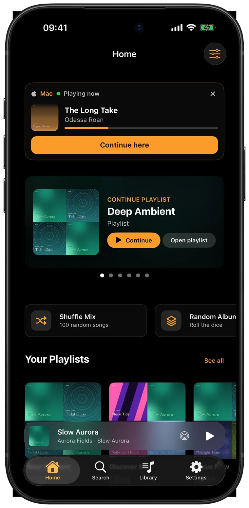

Open NaviBeat on both devices
Both on the same Wi-Fi, signed in to the same account on your server.
How Play on works
Use your phone as the remote for NaviBeat on the TV, or move what you are playing to another room from the same second. No account of mine and no cloud, only your devices and your server.
Two ways



Step by step
Both on the same Wi-Fi, signed in to the same account on your server.
In Now Playing tap Output. On Apple TV hold Select on Play/Pause to open the menu.
This device becomes the remote for that one: play, pause, skip, seek, volume and the whole queue.
Send to lists a device on an older version, one you cannot control. The queue moves there and goes on from the same second. The device you left stops.
From Home
The Continue card on Home shows every other NaviBeat that is playing, one row each, with Continue here and Control. Control takes you straight to that device.

Questions
No. Both devices have to be on the same local network. Play on and Send to do not go over the internet.
Yes. Both have to be signed in to the same account on your server. That is how they prove they are yours, so a stranger on your Wi-Fi can not take over.
No. The device that plays gets the music from your server. Your phone only sends commands.
NaviBeat has to be open on it, and both devices have to be on the same network. On iPhone and iPad, Local Network must be allowed for NaviBeat in Settings.
No. Play on and Send to are for iPhone, iPad, Mac and Apple TV.